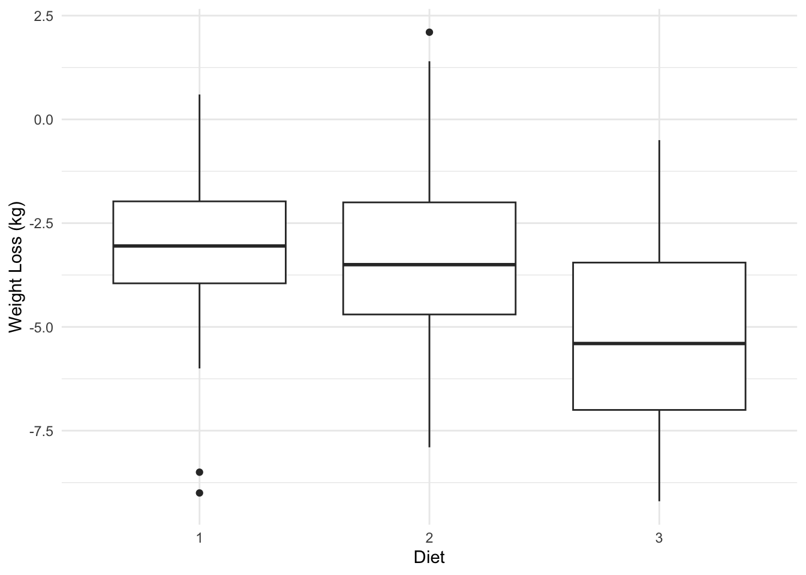
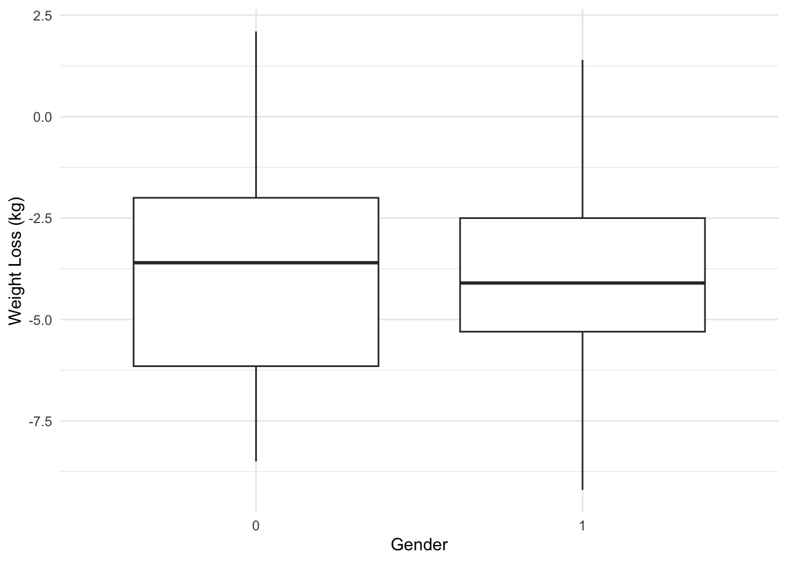

Here is some new data to play with a bit to explore one-way and two-way analysis of variance models. These data represent weight data associated with three different diet types. There are 76 observations of individuals with the following characteristics:
Gender (0/1)
Age (earth years. 🤓)
Height (cm)
Pre.weight & weight6weeks (kg)
Diet (1,2,3)
The data are located as a CSV file named DietData.csv linked from the Canvas page. Load the data in and format things so they look correctly to you.
# load the data in herediet_data <-read.csv("DietData.csv")head(diet_data)
One of the first things to do is to look at the data and see if there are any obvious things. Go ahead and explore these data visually. What do you see?
# Data visualization# Load required librarieslibrary(ggplot2)# Create a boxplot for Weight Loss across Dietsggplot(diet_data, aes(x=factor(Diet), y=weight6weeks - pre.weight)) +geom_boxplot() +labs(x ="Diet", y ="Weight Loss (kg)") +theme_minimal()

# Create a boxplot for Weight Loss by Genderggplot(diet_data, aes(x=factor(gender), y=weight6weeks - pre.weight)) +geom_boxplot() +labs(x ="Gender", y ="Weight Loss (kg)") +theme_minimal()

The first boxplot suggests that Diet 1 might be more effective in terms of average weight loss compared to Diets 2 and 3. However, it’s also important to consider the variability and outliers, as they can provide additional context about the consistency and reliability of each diet’s results.
The second boxplot suggests that both gender groups experienced weight loss, with the Gender 0 group having a slightly higher median weight loss compared to the Gender 1 group. The spread of weight loss data is also wider for the Gender 0 group compared to the Gender 1 group. This information could be relevant for understanding differences in weight loss between the two genders, potentially indicating a difference in response to a weight loss intervention based on gender.
The following objects are masked from 'package:stats':
filter, lag
The following objects are masked from 'package:base':
intersect, setdiff, setequal, union
# Create a table of weight loss by gender and dietdiet_data %>%mutate(Weight_Loss = weight6weeks - pre.weight) %>%group_by(gender, Diet) %>%summarize(Mean_Weight_Loss =mean(Weight_Loss), .groups ="drop")
From the summary table of mean weight loss by gender and diet, I observed the following:
For Gender 0 (which I assume represents one gender group, perhaps females), the average weight loss for each diet type is:
Diet 1: -3.05 kg
Diet 2: -2.61 kg
Diet 3: -5.88 kg
For Gender 1 (which I assume represents the other gender group, perhaps males), the average weight loss for each diet type is:
Diet 1: -3.65 kg
Diet 2: -4.11 kg
Diet 3: -4.23 kg
From these values, I can see that Diet 3 leads to the highest average weight loss for both genders, with -5.88 kg for Gender 0 and -4.23 kg for Gender 1. Interestingly, Diet 2 also shows notable weight loss for both groups, but Diet 1 shows the least weight loss overall.
Looking at the gender comparison, I notice that Gender 1 seems to experience slightly more weight loss across all diets compared to Gender 0. For example, Gender 1’s weight loss is slightly greater in Diets 1, 2, and 3 than for Gender 0.
Now, I’m interested in testing whether these observed differences are statistically significant using ANOVA to see if diet and gender play a role in the weight loss outcomes.
Test the null hypothesis, \(H_O:\)There is no effect of diet on weight loss (e.g., \(\tau_{Diet-1} = \tau_{Diet-2} = \tau_{Diet-3} = 0.0\)). Is there evidence for one diet producing more weight loss than the others? Create an aov analysis and assign it to the variable fit.diet and examine its contents.
# Define modelfit.diet <-aov(weight6weeks ~factor(Diet), data = diet_data)# Examine the resultssummary(fit.diet)
Df Sum Sq Mean Sq F value Pr(>F)
factor(Diet) 2 81 40.62 0.619 0.541
Residuals 73 4790 65.61
Are they all significantly different? Try the TukeyHSD() Interpret the results.
# Posthoc testtukey_result <-TukeyHSD(fit.diet)# Display the resultstukey_result
Tukey multiple comparisons of means
95% family-wise confidence level
Fit: aov(formula = weight6weeks ~ factor(Diet), data = diet_data)
$`factor(Diet)`
diff lwr upr p adj
2-1 -2.563000 -8.101060 2.975060 0.5127347
3-1 -1.093519 -6.530187 4.343150 0.8803987
3-2 1.469481 -3.909314 6.848277 0.7909184
Based on the Tukey HSD results, none of the pairwise diet comparisons show statistically significant differences in weight loss. This means that, according to this analysis, there isn’t enough evidence to suggest that any of the three diets produce significantly different weight loss outcomes.
How much of the variation is explained? If you notice when you do a summary from a lm() (regression) model, it gives you the \(R^2\) values directly (remember \(R^2 = \frac{SS_{model}}{SS_{Error}}\)). Does summary() of your aov model give you that?
# How much variance?# Get the ANOVA tableanova_results <-anova(fit.diet)# Extract the sum of squares for the model and error (residuals)ss_model <- anova_results[1, "Sum Sq"] # Sum of squares for Dietss_error <- anova_results[2, "Sum Sq"] # Sum of squares for Residuals# Calculate the R^2 valuer_squared <- ss_model / (ss_model + ss_error)# Output the resultr_squared
[1] 0.01667723
R2 isn’t included in the output of summary(aov()) because ANOVA is primarily a statistical test, not a model evaluation tool like regression.
The\(R^2\)value of 0.0167 indicates that only about 1.67% of the variation in weight loss is explained by the diet factor. This suggests that the diet types have a very small effect on weight loss in this dataset, and most of the variation is likely due to other factors (such as individual differences, age, gender, or other unaccounted variables).
Since I asked the question, the answer is probably no. Why does it not do this? Probably for historical reasons, which are a bit of a pain in the backside. That being said, there are some tidy ways to fix this issue. I’m going to use the broom package which allows us to clean up (or tidy if you will) the model objects. This will take the model object and pull out all the ANOVA table stuff and put it into a tibble.
Independent of the diet, test the null hypothesis \(H_O:\)There is no difference in weight loss between genders (e.g., $ =* = 0.0 $). Is there evidence for one gender being significantly different than another? How much of the variation is explained (another \(R^2\) by gender)?
# partition effectsfit.gender <-aov(weight6weeks ~factor(gender), data = diet_data)# Get the summary of the ANOVAsummary(fit.gender)
Df Sum Sq Mean Sq F value Pr(>F)
factor(gender) 1 2596 2596.2 84.45 7.29e-14 ***
Residuals 74 2275 30.7
---
Signif. codes: 0 '***' 0.001 '**' 0.01 '*' 0.05 '.' 0.1 ' ' 1
#R^2tidy_gender <-tidy( fit.gender )tidy_gender
# A tibble: 2 × 6
term df sumsq meansq statistic p.value
<chr> <dbl> <dbl> <dbl> <dbl> <dbl>
1 factor(gender) 1 2596. 2596. 84.5 7.29e-14
2 Residuals 74 2275. 30.7 NA NA
Based on the results of the One-Way ANOVA test for gender, I found strong evidence that gender significantly influences weight loss. The F-value for gender was 84.45, and the corresponding p-value was extremely small (7.29e-14), which is much less than the commonly used significance level of 0.05. This means that I can confidently reject the null hypothesis that there is no difference in weight loss between genders. In other words, the data provide strong evidence that males and females experience different amounts of weight loss.
Additionally, I calculated the R² value, which tells me how much of the variation in weight loss can be explained by gender. From the ANOVA results, I found that 53.3% of the variation in weight loss is explained by gender. This suggests that gender plays a relatively significant role in weight loss outcomes in this dataset.
Overall, these results suggest that gender is an important factor in determining weight loss, and more than half of the variability in weight loss can be attributed to differences between males and females. This is a noteworthy finding, as it underscores the potential importance of considering gender when studying weight loss interventions or outcomes.
The \(R^2\) value for the interaction model is approximately 0.533, which means the model explains 53.3% of the variance in weight loss. This indicates that more than half of the variability in the dataset can be attributed to the effects of gender.
Which Model is Best?
How would you compare the models you generated? How do you interpret the findings?
Explain, in words, your findings and interpretation of these findings
Summary of the Models:
Diet Model:
The diet model tests whether weight loss significantly differs across the three diets.
F-statistic = 0.619, p-value = 0.541: This indicates no significant effect of diet on weight loss.
The residual sum of squares (4790) is large compared to the sum of squares for diet (81), suggesting that diet alone explains very little of the variance in weight loss.
Gender Model:
The gender model tests whether weight loss significantly differs between genders.
F-statistic = 84.45, p-value = 7.29e-14*: Gender has a highly significant effect on weight loss, with males and females showing distinct differences in weight loss.
The sum of squares for gender (2596) is substantial compared to the residual sum of squares (2275), indicating that gender explains a significant portion of the variation in weight loss.
Interaction Model:
The interaction model tests the effects of diet, gender, and their interaction on weight loss.
Diet (F = 1.317, p = 0.275): Diet alone does not significantly affect weight loss.
Gender (F = 84.743, p = 1.11e-13*):** Gender remains a significant factor, consistent with the gender model.
Interaction (F = 0.279, p = 0.758): The interaction between diet and gender is not significant, suggesting that the effect of diet on weight loss does not differ significantly between genders.
The residual sum of squares (2158.9) is lower compared to the diet or gender models, reflecting improved explanatory power of the interaction model.
Diet: Across the three diets, there is no significant difference in weight loss. This suggests that diet alone does not explain variation in weight loss outcomes.
Gender: Gender has a strong and significant effect on weight loss, indicating that weight loss differs substantially between males and females.
Interaction: The interaction between diet and gender is not significant, meaning that while gender significantly affects weight loss, the diets do not behave differently for males versus females.
Which Model is Best?
The gender model explains a significant amount of variance and has the highest F-statistic and significance level among the single-factor models.
The interaction model accounts for both diet and gender simultaneously and provides a more nuanced analysis, but the lack of a significant interaction term suggests it may not be necessary for this dataset.
In conclusion, gender is the primary factor driving weight loss differences, and diet does not appear to play a significant role, either independently or in interaction with gender.